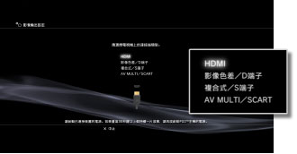
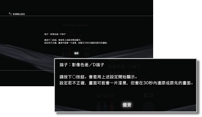
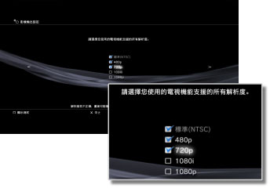
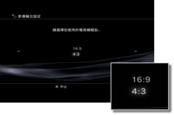
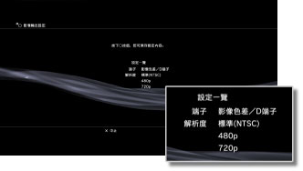

影像輸出設定
設定PS3™的影像輸出。請配合您使用的電視機，選擇最適切的輸出設定。
1. |
確認您使用之電視機的支援解析度。
可支援之解析度會因電視機的種類而異。詳細請參閱電視機隨附的說明書。
|
2. |
選擇 （設定）的 （設定）的 （顯示器設定）。 （顯示器設定）。
|
3. |
選擇［影像輸出設定］。
|
4. |
選擇電視機使用的連接端子。
可支援之解析度會因您使用之端子種類而異。

| 電視機的輸入端子 |
可支援之影像輸出（NTSC地區）*1 |
可支援之影像輸出（PAL地區）*1 |
| HDMI |
1080p / 1080i / 720p / 480p |
1080p / 1080i / 720p / 576p |
| 影像色差端子／D端子*2 |
1080p / 1080i / 720p / 480p / 480i |
1080p / 1080i / 720p / 576p / 576i |
| AV影像端子／S端子*3 |
480i |
576i |
| AV MULTI／SCART*4 |
480p / 480i |
576p / 576i |
| *1 |
影像輸出之顯示方式會因PS3™之販售區域而異。北美與亞洲等NTSC地區的［標準（NTSC）］為480i，歐洲等PAL地區的［標準（PAL）］則為576i。詳細請參閱主機隨附的使用說明書。
|
| *2 |
D端子是一種主要在日本地區使用的規格。D1～D5的支援解析度如下。
D5: 1080p / 720p / 1080i / 480p / 480i
D4: 1080i / 720p / 480p / 480i
D3: 1080i / 480p / 480i
D2: 480p / 480i
D1: 480i
|
| *3 |
AV影像端子指PS3™主機隨附之AV連街線的影像端子。
|
| *4 |
AV MULTI是一種主要在日本地區使用的規格。SCART是一種主要在歐洲地區使用的規格。選擇［AV MULTI／SCART］時，會先顯示選擇輸出信號種類的確認畫面。
|
|
5. |
變更影像輸出設定。
變更影像輸出的解析度。於步驟4選擇某些端子後，可能不會顯示此畫面。

|
6. |
設定最高解析度。
選擇您使用的電視機支援的所有解析度。系統會自動從您選擇的解析度中，配合播放的內容輸出解析度最高的影像。*
* 影像的解析度會依1080p ＞ 1080i ＞ 720p ＞ 480p / 576p ＞ 標準（NTSC:480i / PAL:576i）的優先順序調整輸出。
於步驟4選擇［複合式／S端子］時，不會顯示此畫面。選擇［HDMI］時，亦可選擇自動設定（但需啟動您連接之HDMI裝置的電源），此時將不會顯示此畫面。

|
7. |
設定電視機類型。
配合您使用的電視機選擇電視機類型。於步驟4選擇［複合式／S端子］或［AV MULTI／SCART］後石，僅能調整以SD解析度輸出的設定（NTSC:480p / 480i、PAL:576p / 576i）。

|
8. |
確認設定內容。
確認電視機是否以正確解析度顯示影像。按下方向按鈕 ，可回到之前的畫面重新設定。 ，可回到之前的畫面重新設定。

|
9. |
保存設定內容。
將影像輸出設定的設定內容保存至PS3™。接著可設定聲音輸出。聲音輸出的詳細內容，請參閱（設定）＞ （聲音設定）＞［聲音輸出設定］。 （聲音設定）＞［聲音輸出設定］。
|
提示
- 選擇部分影像輸出設定時，需準備非隨附的影像輸出連接線（另購）。詳細請參閱主機隨附的使用說明書。
- 影像輸出設定與您使用之電視機不符時，可能會於切換解析度時，畫面突然一片漆黑，但只要暫時等待即會自動恢復為原先的解析度。若等待30秒以上畫面仍沒有恢復時，請切斷電源。之後，請持續按壓PS3™主機前面的電源按鈕5秒鐘以上，再啟動主機，可讓影像輸出設定回復為原先的標準解析度。
- 若使用HDMI連接線連接不支援HDCP（High-bandwidth Digital Content Protection）規格的裝置，將無法顯示PS3™輸出的影像與聲音。
- 若想使用1080p解析度輸出內建著作權保護機能之Blu-ray Disc（藍光光碟）的影像，需使用HDMI連接線連接支援HDCP規格的裝置。